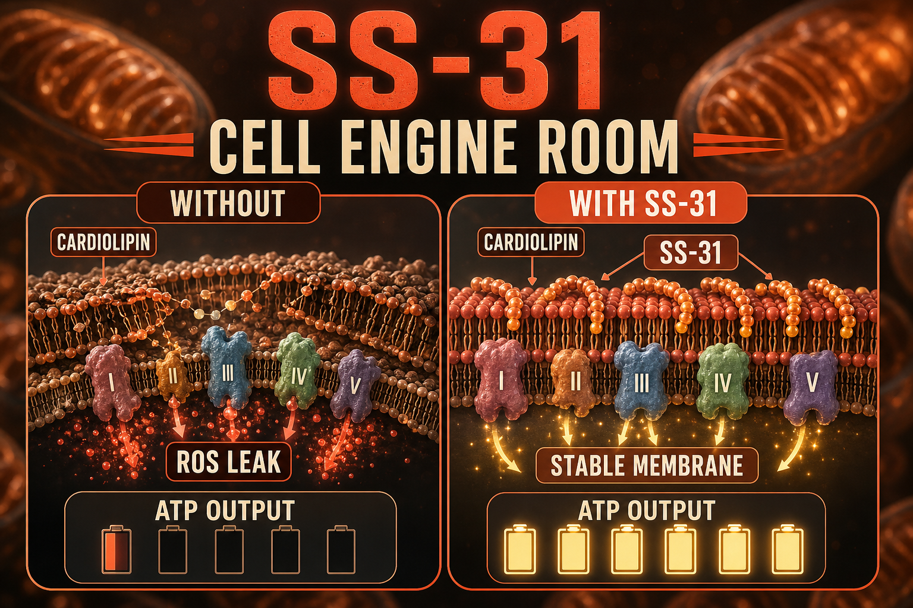

What SS-31 Is
SS-31 - also known as Elamipretide, MTP-131, Bendavia, and sold as the FDA-approved drug FORZINITY - is a synthetic tetrapeptide developed by Drs. Hazel Szeto and Peter Schiller at Cornell University. Its full name is Szeto-Schiller peptide 31.
On September 19, 2025, SS-31 became the first mitochondria-targeted therapeutic to receive FDA approval, under the brand name FORZINITY, for improving muscle strength in adult and pediatric patients with Barth syndrome - a rare inherited mitochondrial disease affecting cardiac and skeletal muscle function. This is a significant regulatory milestone that distinguishes SS-31 from virtually every other compound in this guide.
SS-31's mechanism is unique: unlike receptor-binding peptides that produce downstream signaling effects, SS-31 physically accumulates in the inner mitochondrial membrane and binds cardiolipin - a phospholipid unique to that membrane that is essential for the function of the electron transport chain (the cellular machinery that produces ATP, your cells' energy currency). By stabilizing cardiolipin and protecting its structural role, SS-31 enables mitochondria to produce ATP more efficiently with less oxidative damage.
Important clinical context: SS-31 has also failed in several Phase 3 trials (primary mitochondrial myopathy, macular degeneration, heart failure). Its FDA approval is narrow and under accelerated approval with confirmatory trials required. The research outside the Barth syndrome indication is promising but mixed.
Plain English Version
Fixing the Engine Room's Core Machinery
Think of your mitochondria as the engine room on a ship - and cardiolipin as the gaskets that keep the engine's core components sealed and functional. When the gaskets degrade, the engine doesn't stop working - but it runs less efficiently, produces more heat, more waste, and delivers less power for the same fuel input.
SS-31 goes directly into the engine room and tends to the gaskets. It does not add more fuel (that is NAD+). It does not build more engines (that is MOTS-c). It works on the fundamental mechanical interface that determines how efficiently each existing engine converts fuel into power - the cardiolipin layer of the inner mitochondrial membrane.
At the age of biological complexity, the gaskets in your cellular engine rooms have taken decades of use and oxidative stress. SS-31 addresses that degradation at the most fundamental level - inside the membrane itself, not through a receptor or gene expression pathway, but through direct physical stabilization of the core energy machinery.
One sentence: SS-31 physically accumulates in your mitochondrial membrane and stabilizes the cardiolipin layer that makes cellular energy production efficient - the first mitochondria-targeted compound to receive FDA approval.
How To Picture It

How It Works
SS-31 (sequence D-Arg-Dmt-Lys-Phe-NH2) selectively accumulates in the inner mitochondrial membrane, reaching concentrations hundreds of times higher there than in the surrounding cytoplasm. It binds cardiolipin, which is required for proper electron transport chain assembly and ATP synthase function. By stabilizing cardiolipin structure, SS-31 reduces electron leakage from the chain, decreases reactive oxygen species (ROS) production, maintains ATP synthase efficiency, and reduces mitochondrial swelling associated with dysfunction. The result is cleaner, more efficient energy production per unit of fuel consumed.
Documented Benefits
primary documented mechanism
documented in TAZPOWER Barth syndrome trial
6-minute walk distance improvement in long-term Barth trial
improved stroke volume in TAZPOWER
direct ROS reduction from cardiolipin stabilization
preclinical evidence for cognitive protection
strongest regulatory validation of any mitochondrial peptide
Dosing Protocol
| Protocol | Dose | Frequency | Route | Notes |
|---|---|---|---|---|
| Conservative wellness | 2-5mg | Daily | SubQ | Lower end research protocols |
| Standard community | 5-10mg | Daily | SubQ | Most discussed range |
| Clinical (FORZINITY) | 40mg daily | Daily | SubQ | FDA-approved Barth dose |
| Cycle | 8-12 weeks | 4 weeks off | — | Standard research cycling |
Note: The FDA-approved FORZINITY dose for Barth syndrome is 40mg daily SubQ. Wellness protocols in the research community use much lower doses. These are not equivalent clinical contexts.
Reconstitution Standard
Research-grade SS-31 vials (typically 10mg or 40mg) + 1ml BAC water per 10mg = 10mg/ml 5mg dose = 50 units | 10mg dose = 100 units
FORZINITY comes as a ready-to-use 280mg/3.5ml (80mg/ml) solution - this is the prescription product; research vials are separate.
Dosage Build-Up Timeline
- Week 1-2: 2-5mg daily - tolerance and response
- Week 3-8: 5-10mg daily - standard research protocol range
- Week 9-12: Continue or reassess
- Week 13-16: 4-week reduced dose or break
- Repeat
Common Mistakes
different product forms, different regulatory status, different dose contexts
SS-31 produces cumulative mitochondrial improvements; effects build over weeks
SS-31 has FDA approval for Barth syndrome, not general energy or anti-aging
the evidence is real but mixed; honest assessment required
Contraindications And Cautions
insufficient data
FDA-approved FORZINITY lower weight limit
theoretical concern with any compound that enhances cellular energy production
generally mild
What To Track
- Energy levels subjective 1-10 weekly
- Exercise capacity - note changes in endurance or power output
- Sleep quality
- Recovery time post-exercise
- Any injection site reactions
Stacks Well With
- NAD+ - complementary energy support; NAD+ is the fuel substrate, SS-31 optimizes the engine
- MOTS-c - MOTS-c builds more mitochondria, SS-31 makes each one run more efficiently
- Epithalon - longevity stack covering cellular aging from mitochondria, telomeres, and circadian simultaneously
Sources
- ElamipretidePrescribingInfo FORZINITY Sept 2025. fda.gov
- Empire Medical Training SS-31 Guide June 2026. empiremedicaltraining.com
- PeptideDeck SS-31 Dosage Chart 2026. peptidedeck.com
- PeptideDosingProtocols SS-31 June 2026. peptidedosingprotocols.com
- TAZPOWER trial NCT03098797. clinicaltrials.gov
- Campbell MD et al. SS-31 exercise tolerance aged mice. Free Radical Biology Medicine 2018. pubmed.ncbi.nlm.nih.gov
For educational and research documentation purposes only. Not medical advice. Always speak with a qualified healthcare professional before making health decisions.